茨城県古河市東・古河駅東口から徒歩4分 営業時間を確認中
朝八時。焼けたものから、店先の棚へならべてまいります。
夏季休業のお知らせ。7月30日（木）から8月31日（月）まで、お休みをいただいております。
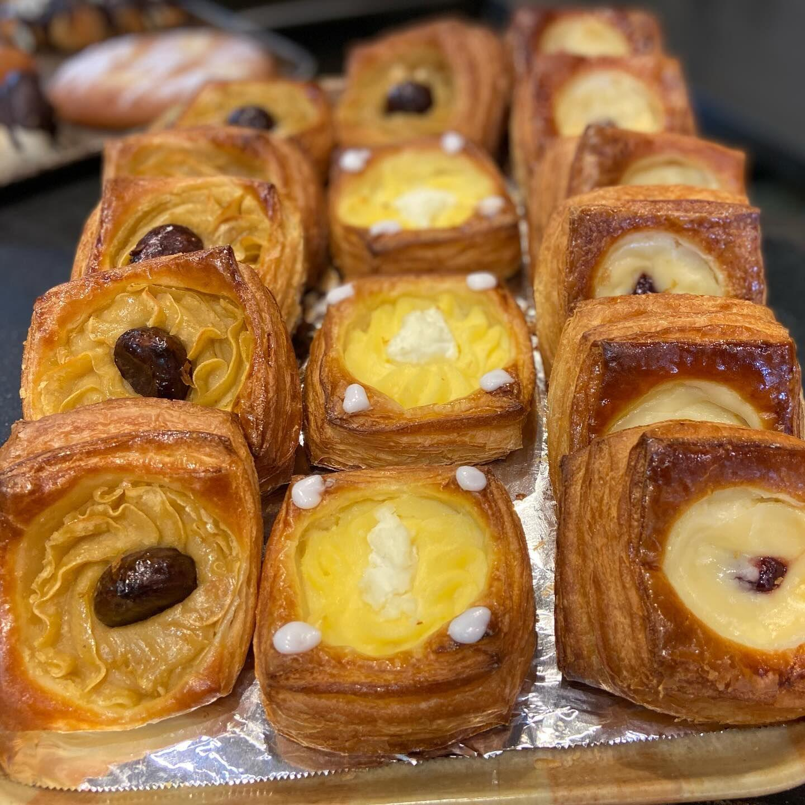
OPEN 8:00／パンがなくなり次第／木・日・祝 休
昭和三十二年、この通りでパンを焼きはじめました。コッペパンの生地は、そのころから変えずにおります。
サラダ・たまご・マヨネーズ・カスタード・生クリームは、毎朝この店でこしらえております。パンをはさまず、中身だけをお分けすることもできますので、おかずにも、ご自宅のパンに塗るのにも、どうぞお使いくださいませ。
その日のぶんを売り切りましたら、看板を下ろします。お決まりのものがございましたら、お電話にてお取り置きを承ります。
昭月堂
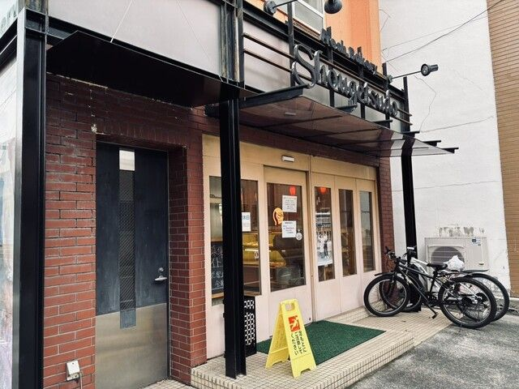
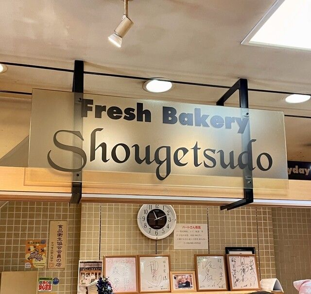
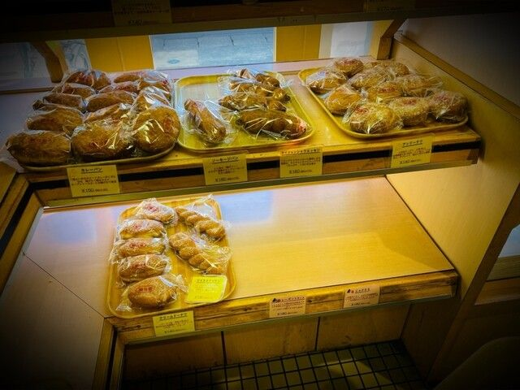
焼けたものから棚へ出しますので、お越しになる時間で、棚にならぶものが変わります。
店先にならべているほかに、生地がございましたらお好きな組み合わせでもお作りいたします。店員までお声がけくださいませ。よくお出ししておりますのは、この順でございます。
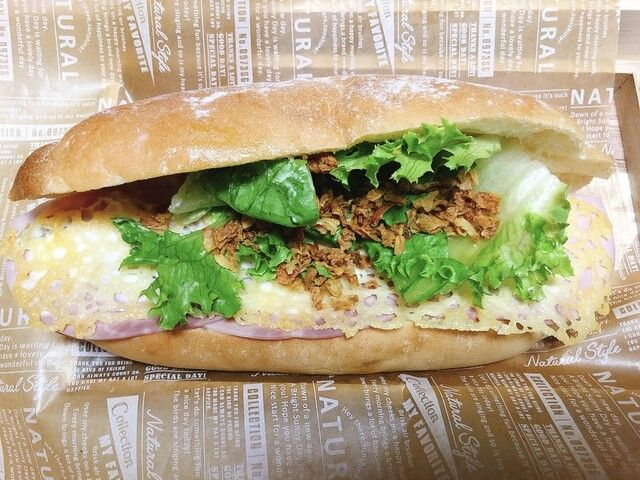
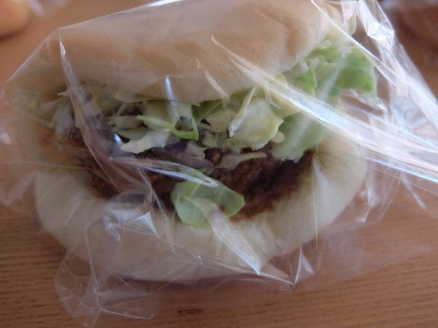
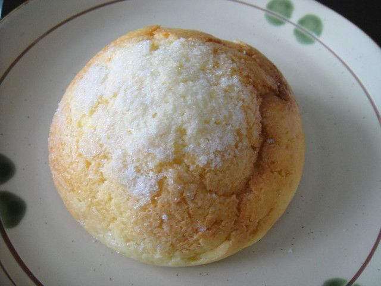
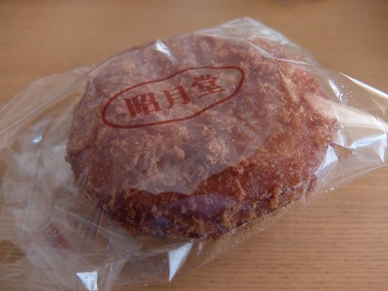
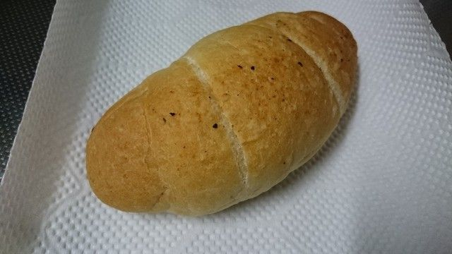
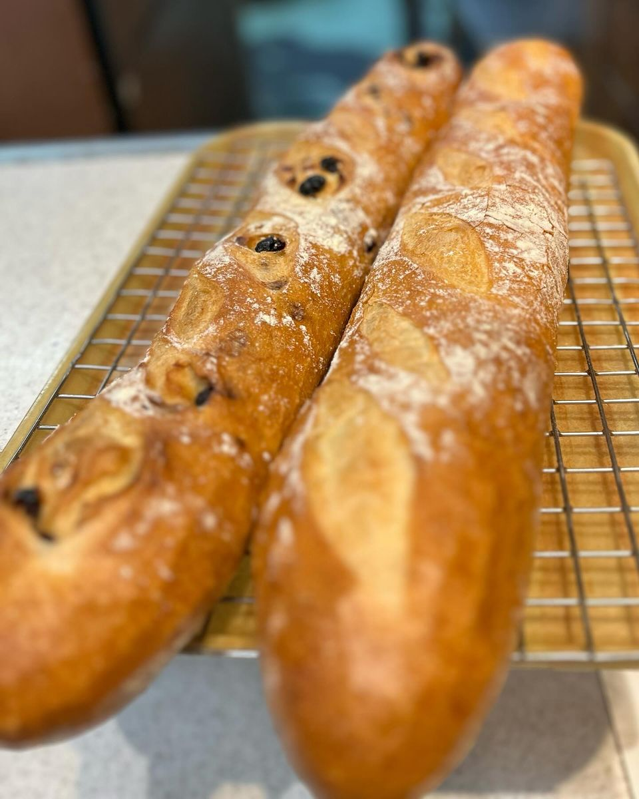
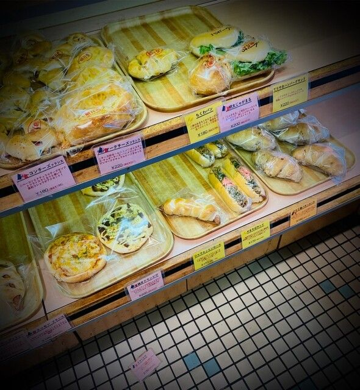
| 住所 | 〒306-0011 茨城県古河市東2-12-20 |
|---|---|
| 電話 | 0280-32-1733 |
| 営業時間 | 8:00〜16:00 （パンがなくなり次第、閉店いたします） |
| 定休日 | 木曜日・日曜日・祝日 |
| お渡し | お持ち帰りのみ。お電話でのお取り置きを承ります |
| 最寄り | JR宇都宮線 古河駅 東口から徒歩4分 |
お車でお越しの方、お支払いの方法につきましては、恐れ入りますがお電話にてお尋ねくださいませ。